Chapter 2 자료의 입출력
2.1 자료의 입력
SAS에서 데이터셋을 생성하는 방법은 크게 4가지로 나누어진다. 첫 번째는 CARDS (DATALINES) 문을 이용하여 SAS에서 직접 데이터셋을 생성하는 방법이며, 두 번째는 INFILE문을 이용하여 외부데이터를 불러오는 방법이다. 세 번째는 위저드를 이용하여 외부데이터를 불러오며, 네 번째는 PROC IMPORT문을 이용하여 외부데이터를 불러오는 방법이다. 이를 위해 다음과 같이 일반적으로 많이 쓰는 데이터 형태를 이용한다.
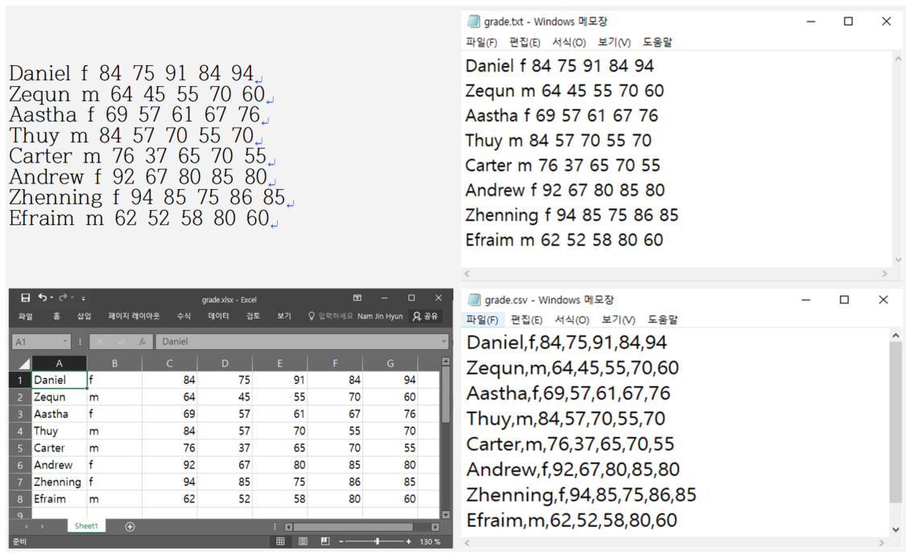 왼쪽 위는 우리가 만들고자 하는 데이터셋 내용이며 SAS에서 직접 입력을 할 때 이용한다. 오른쪽 위는 TXT 형식으로 입력된 자료이다. TXT 파일은 보통 공백(space)으로 구분하거나 혹은 TAB 분리를 이용하며, TAB 분리를 하는 경우 TXT 대신 TSV 확장자를 이용하기도 한다. 왼쪽 아래는 일반적으로 사무보조에 많이 쓰는 EXCEL 파일 형태이며, 오른쪽 아래는 구분자가 ‘,’(comma)인 CSV 파일을 나타낸다. 이 외에도 많은 형태가 존재하지만, 주로 많이 쓰는 4가지 형태를 기준으로 살펴본다.
2.1.1 CARDS문 이용
CARDS 문 또는 DATALINES 문은 SAS 내에서 데이터셋을 직접 생성할 때 사용되며 변수 특성을 지정하는 INPUT 문과 함께 사용된다. INPUT 문은 CARDS 문 이전에 사용되며 CARDS 문 다음에는 각 변수가 가질 값을 정의한다. 다음의 명령문은 GRADE라는 데이터셋을 생성시키며, 데이터셋 내에는 NAME, GENDER, K, E, M, SO, SC라는 변수가 생성된다.
data grade;
input name $ gender $ K E M So Sc ;
cards;
Daniel f 84 75 91 84 94
Zequn m 64 45 55 70 60
Aastha f 69 57 61 67 76
Thuy m 84 57 70 55 70
Carter m 76 37 65 70 55
Andrew f 92 67 80 85 80
Zhenning f 94 85 75 86 85
Efraim m 62 52 58 80 60
;
run;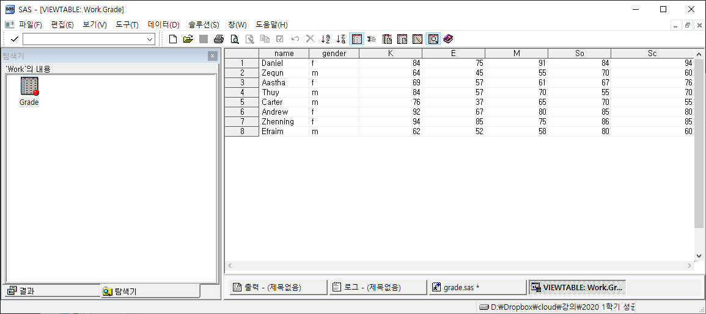
SAS에서 생성된 데이터셋을 확인할때는 PROCEDURE 명령어인 PROC PRINT를 이용하거나, 데이터셋을 직접적으로 SPREADSHEET 형태로 확인이 가능하다. SAS 내에서 직접 데이터셋을 확인 하는 방법은 SAS 창에서 탐색기 -> 라이브러리 -> Work -> Grade를 클릭하면 위와 같은 결과를 확인할 수 있다. INPUT 문에서 NAME과 GENDER 뒤에 ‘$’가 붙었기 때문에 문자형 변수로 생성되었으며, 나머지 변수들은 숫자로 생성된다. 데이터셋에서 왼쪽 정렬은 문자형 변수를 뜻하며, 오른쪽 정렬은 숫자형 변수를 의미한다. 따라서 데이터셋에 정렬된 형태만으로 문자형 변수와 숫자형 변수의 구별이 가능하다.여기서 NAME과 GENDER는 왼쪽정렬, 나머지 변수는 오른쪽 정렬임을 알 수 있다. PROC PRINT 구문으로 생성된
데이터를 확인하는 방법은 다음과 같다.
PROC PRINT DATA=GRADE; RUN;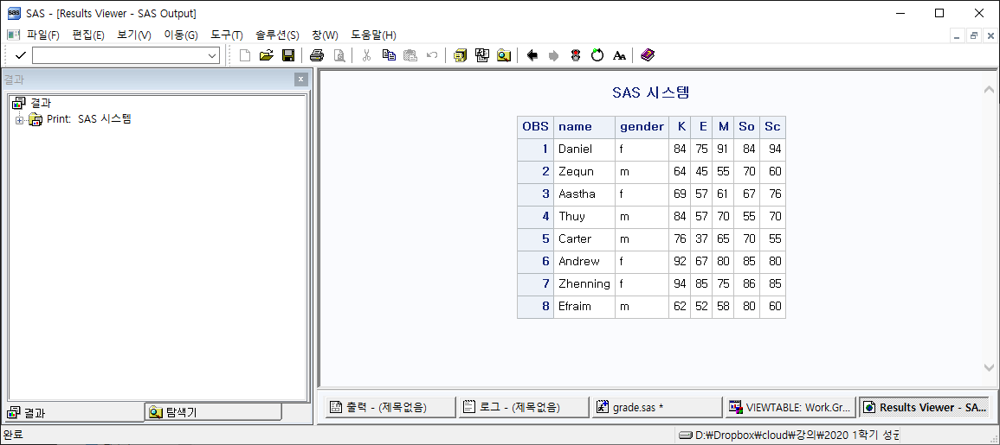
2.1.2 INFILE 구문 이용
외부데이터를 불러오는 첫 번째 방법은 INFILE 구문을 이용하는 것이다. INFILE 구문은 외부데이터를 SAS로 불러오거나 SAS 내에서 CARDS문과 결합하여 사용한다. 특히 TXT 형식의 자료를 불러오는데 유용하다. INFILE 구문을 이용하여 SAS 외부에 존재하는 TXT 파일을 불러오는 명령어는 다음과 같다.
data grade;
infile 'D:\SAS\grade.txt';
input name $ gender $ K E M So Sc;
run;여기서 ’D:.txt’는 grade.txt가 존재하는 경로명을 의미한다. INFILE 구문은 다음과 같은 옵션 구문을 통해 다양한 형태의 데이터를 불러들일 수 있도록 한다. 옵션의 위치는 [INFILE 경로명 옵션1 옵션2…;]와 같다.
INFILE 'D:\SAS\grade.txt' DLM=’,‘; DELIMITER= OR DLM= : 구분자를 선택
DSD(delimiter-sensitive data) : 구분자가 ‘,’인 경우 사용
FIRSTOBS=record-number : 첫 번째 행의 선택
LRECL=logical-record-length : 레코드의 길이 설정
MISSOVER : MISSING값의 SKIP
OBS=record-number : 관측치의 개수 설정INFILE의 다른 용법은 FILENAME과 결합하여 사용하는 것이다. FILENAME은 외부의 파일을 SAS와 연동시키는 역할을 하며 사용법은 다음과 같다.
FILENAME outfile 'D:\SAS\grade.txt';
data grade;
infile outfile;
input name $ gender $ K E M So Sc;
run;위의 구문에서 C:.txt라는 파일은 SAS에서 OUTFILE로 인식한다. 따라서 INFILE문에서 경로명 대신 OUTFILE만 적어줘도 D:.txt 파일을 불러들여 데이터셋을 생성한다. 또한 FILENAME은 특정한 파일을 연동시키는 것뿐만 아니라 폴더 자체를 연동시키는 것도 가능하다.
FILENAME outfile 'D:\SAS\';
data grade;
infile outfile (grade.txt);
input name $ gender $ K E M So Sc;
run;위의 구문은 D:폴더를 OUTFILE로 연동을 시키고 INFILE에서 OUTFILE로 연동된 폴더의 grade.txt라는 파일을 불러들인다. INFILE은 또한 CARDS문과 결합하여 사용가능하다.
data grade;
infile cards dsd;
input name $ gender $ K E M So Sc;
cards;
aa,f,84,75,91,84,94
bb,m,64,45,55,70,60
cc,f,69,57,61,67,76
dd,m,84,57,70,55,70
ee,m,76,37,65,70,55
ff,f,92,67,80,85,80
gg,f,94,85,75,86,85
hh,m,62,52,58,80,60
;
run;구분자가 ‘,’인 경우에 INFILE 옵션 DSD를 이용하여 데이터셋을 불러들임을 알 수 있다.
2.1.3 위저드(Wizard) 이용
위저드를 이용한 방법은 메뉴 클릭만으로 외부 데이터를 불러들이는 방법이며, 뒤에 설명할 PROC IMPORT에 기반을 둔 방법이다. 위저드를 이용한 데이터 불러오기 순서는 다음과 같다.
파일 -> 데이터 가져오기
-> 읽어올 자료의 형식 지정
-> 데이터가 있는 경로지정
-> 라이브러리 및 테이블 이름 지정우선 파일에서 데이터 가져오기를 클릭하면 다음과 같은 창이 뜬다.
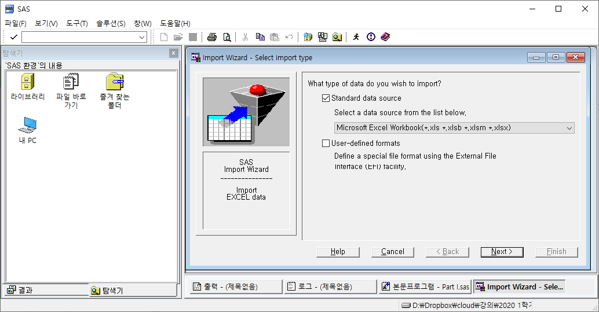
[Select a data source from the list below] 밑에 원하는 데이터 형태를 선택할 수 있다. 기본적으로 EXCEL 파일이 지정되어 있으며 리스트를 펼쳐보면 그 외에도 ’*.TXT나 *.CSV와 같이 다양한 형태의 파일을 불러 올 수 있음을 알 수 있다. 원하는 확장자를 선택하고 [NEXT]를 누른다.
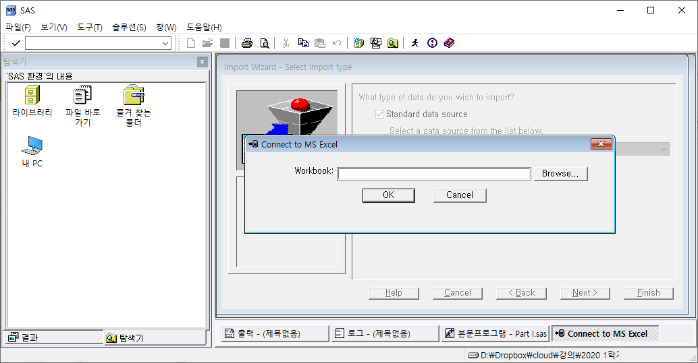
Browse…을 클릭하면 윈도우 탐색기가 실행되며, 여기서 원하는 파일을 선택하고 OK를 누르면 다음과 같은 창이 나타난다.
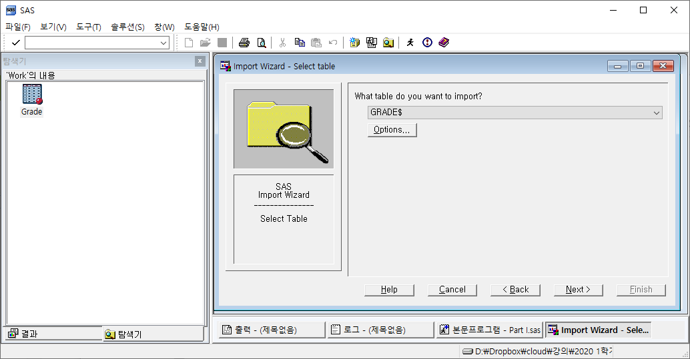
[What table do you want to import?] 이 부분은 엑셀 파일에서 불러들이고자 하는 SHEET명을 나타내며 대부분 자동으로 지정된다. 그다음 [Options…]을 클릭하여 다음을 확인한다.
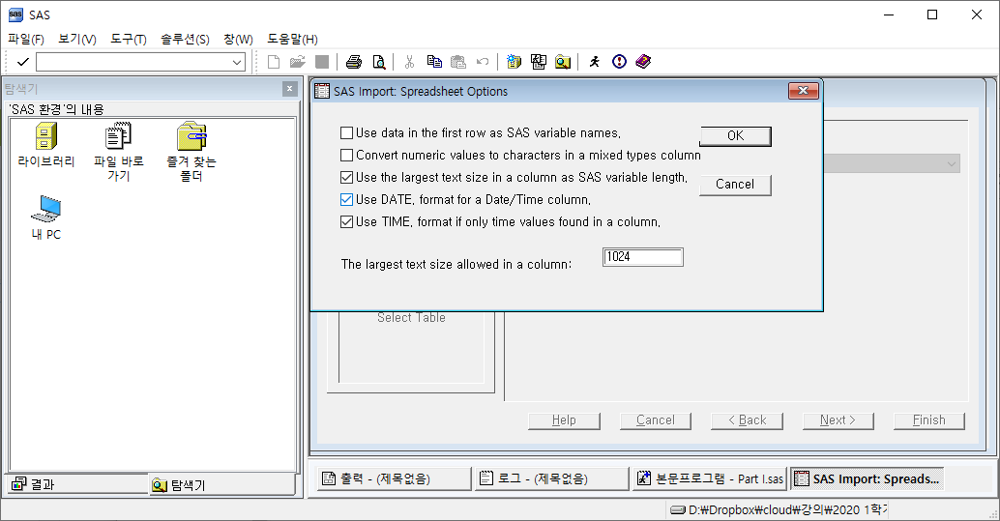
옵션 창을 보면 제일 첫 번째에 [Use data in the first row as SAS variable names.]를 선택하게 되어 있다. 만일 우리가 가진 자료의 첫 번째 줄에 변수 이름이 입력된 자료라면 체크를 하며 첫 번째 줄에 변수 이름 없이 자료가 입력되어 있다면 체크 해제를 한다. GRADE 데이터는 첫 줄에 변수 이름이 없으므로 체크 해제를 하고 OK를 누른고 NEXT를 누른다.
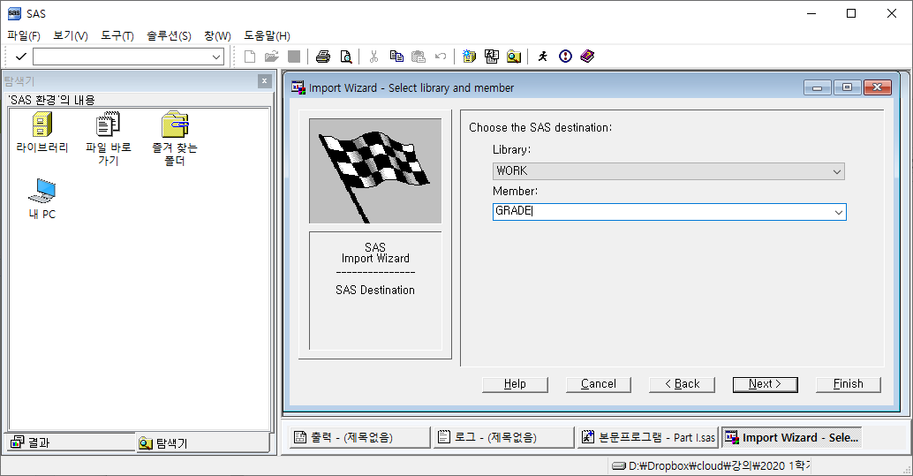
여기서는 Library와 Member를 지정한다. Library를 특별히 지정해주지 않으면 기본 라이브러리인 WORK에 저장하게 된다. Member는 데이터셋의 이름을 넣어주면 된다. 여기서는 GRADE를 넣어준다. 데이터셋의 이름은 임의적인 것이므로 구분하기 쉬운 이름으로 지정하면 된다. NEXT를 누르고 Finish를 누르면 다음과 같이 데이터가 제대로 들어왔음을 확인할 수 있다.
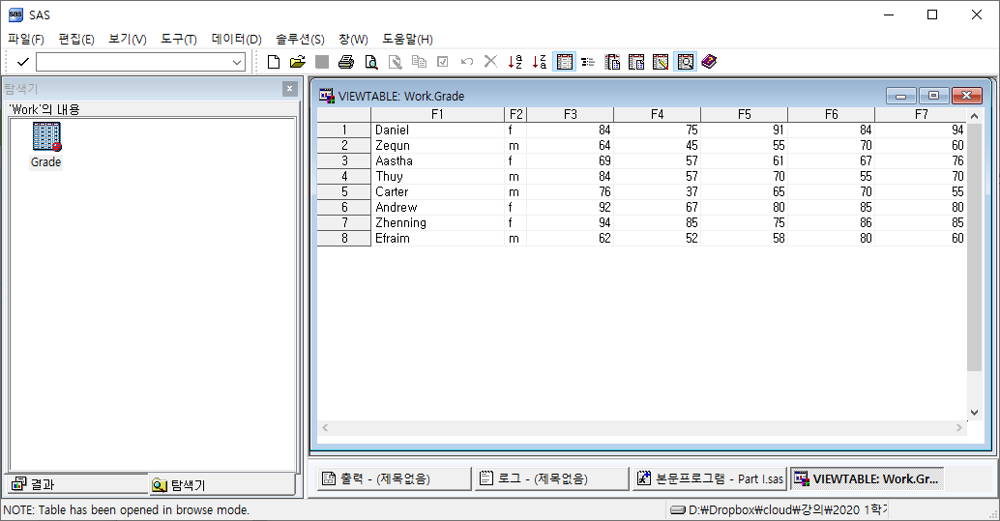
마지막으로 우리가 가진 데이터에는 변수 이름이 없었으므로 SAS에서는 자동으로 F1부터 F7까지 명명한다. 필요하다면 변수 이름을 얼마든지 바꾸어 사용할 수 있다.
EXCEL 파일이 아닌 경우에는 위와 조금 다른 형태를 살펴볼 수 있다. 하지만 걱정할 필요가 없다. 기본적인 과정은 위와 같고 옵션 창에서 Delimiter라고 표시된 곳에 구분자의 구분만 해주고 앞에서와 마찬가지로 [Get variable names from first row.]에서 첫 줄에 변수 이름이 있으면 체크를 하고 변수 이름이 없으면 체크 해제를 하면 된다.
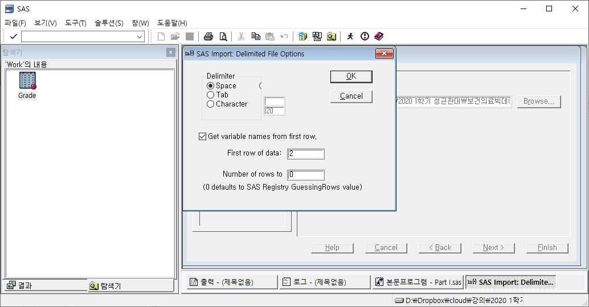
2.1.4 PROC IMPORT 이용
위저드를 이용한 방법은 기본적으로 PROC IMPORT 명령문에 기반을 두고 있다. 따라서 SAS 내에서 명령문으로 제어가 가능하다.
/* EXCEL FILE */
PROC IMPORT OUT= WORK.GRADE
DATAFILE= "G:\grade.xlsx"
DBMS=EXCEL REPLACE;
SHEET="GRADE$" ;
GETNAMES=NO;
MIXED=NO;
SCANTEXT=YES;
USEDATE=YES;
SCANTIME=YES;
RUN;/* CSV FILE */
PROC IMPORT OUT= WORK.GRADE
DATAFILE= "G:\grade.csv"
DBMS=CSV REPLACE;
GETNAMES=NO;
DATAROW=1 ;
RUN;/* TEXT FILE */
PROC IMPORT OUT= WORK.GRADE
DATAFILE= "G:\grade.txt"
DBMS=DLM REPLACE;
DELIMITER='20'x ;
GETNAMES=NO;
DATAROW=1 ;
RUN;사용하려는 외부 파일의 형태에 따라 원하는 대로 사용하면 된다. PROC IMPORT 구문은 항상 정해진 양식이기 때문에 필요한 부분만 변경해서 사용하면 된다. 예를 들어 EXCEL 파일의 경우 OUT에서 새로 생성하려는 데이터셋 이름 지정하고, DATAFILE에서 경로명을, SHEET에서 EXCEL SHEET 이름을, GETNAMES에서 YES 또는 NO만 지정해주면 어떤 엑셀 파일이든지 SAS로 불러오는 것이 가능하다. GETNAMES 옵션은 불러들이는 파일에 변수 이름이 있는지 없는지의 여부를 나타낸다. CSV 파일 혹은 TEXT 파일 또한 마찬가지이며 이외에 여러 가지 형태의 파일 또한 쉽게 불러들일 수 있다.
PROC IMPORT 명령어는 위저드를 통해서 쉽게 생성할 수 있다. 위의 위저드를 실행하면 제일 마지막에 다음과 같은 창이 뜨게 된다.

여기서 [Browse…] 옆 빈칸에 경로명과 파일이름을 직접 기입하거나 [Browse…]를 누르고 경로명과 파일이름을 지정해주면 위저드 시행 과정 동안 지정한 옵션이 적용된 PROC IMPORT 명령문이 생성된다.
2.2 자료의 출력
SAS에서 생성된 데이터셋을 외부 파일로 추출하여 저장이 가능하다. 여기서는 위저드를 이용한 데이터셋 추출과 PROC EXPORT를 이용한 데이터셋 추출법을 살펴본다.
2.2.1 위저드 이용
위저드를 이용한 데이터셋 추출방법은 다음과 같다.
파일 -> 데이터 내보내기
-> 라이브러리 및 테이블 이름 지정
-> 저장할 데이터 양식 지정
-> 데이터 저장경로와 파일이름 지정
-> EXCEL 파일인 경우 SHEET 이름 지정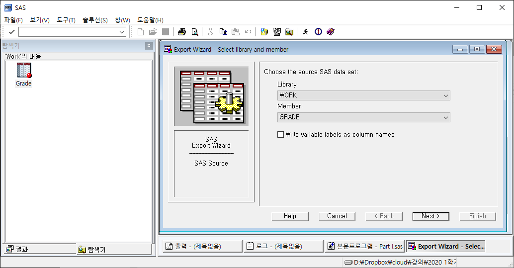
내보내고 싶은 데이터셋의 라이브러리와 데이터셋 이름을 지정한다. 여기서는 WORK 라이브러리의 GRADE 데이터셋을 지정하였다.
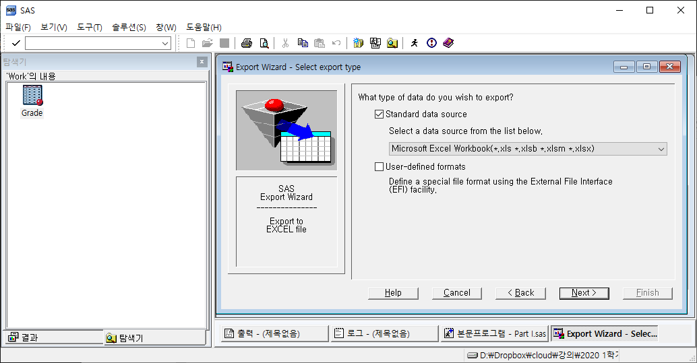
저장하고 싶은 외부 파일의 확장자명을 선택한다. 여기서는 EXCEL로 지정한다.
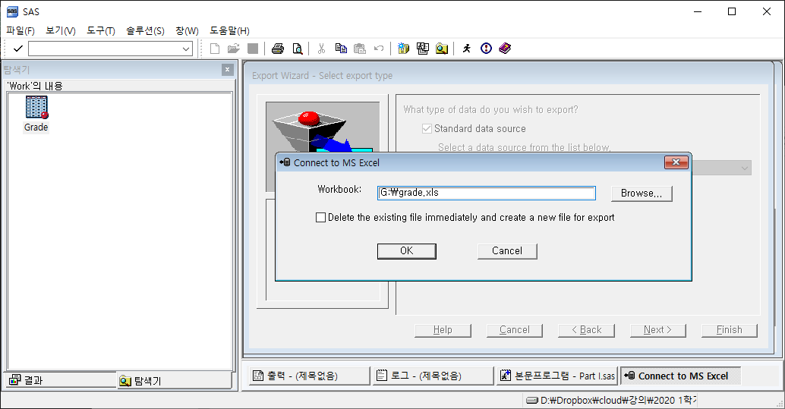
데이터셋이 저장될 경로명과 데이터 이름을 지정한다. 여기서는 G: 폴더에 grade.xls 파일로 저장한다.
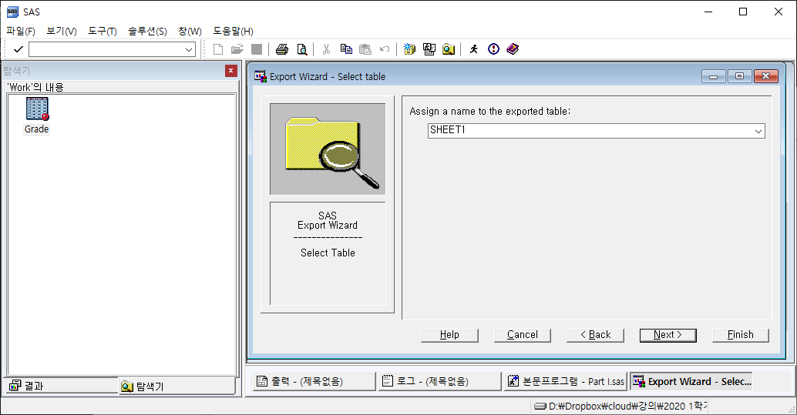
EXCEL 파일로 지정하였기 때문에 SHEET 이름을 설정한다. 지정할 이름이 따로 없으면 비우고 그냥 넘어가도 상관없다.
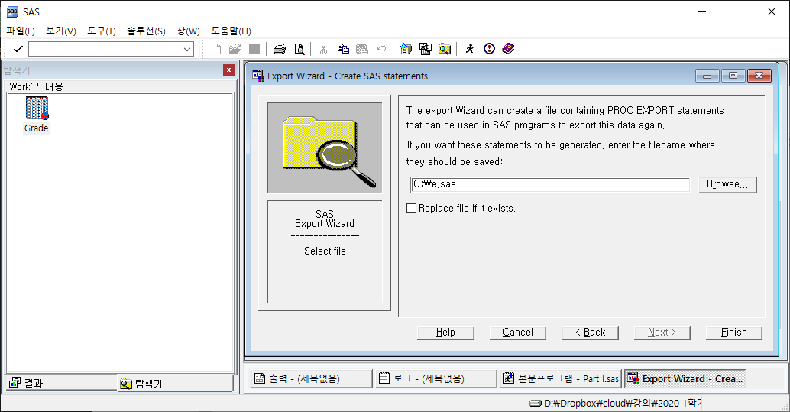
데이터 가져오기와 마찬가지로 지금까지의 실행 옵션을 SAS 파일로 저장가능하다. Finish를 누리면 G:폴더에 grade.xls 파일과 e.SAS 파일이 같이 생성된다. grade.xls 파일에는 내보내고자 하는 데이터셋 내용을 저장되며, e.sas 파일에는 데이터셋을 내보내는 PROC EXPORT 구문이 저장된다.
2.2.2 PROC EXPORT 이용
PROC EXPORT 구문을 이용한 데이터 내보내기 방법은 다음과 같다.
PROC EXPORT DATA= WORK.GRADE
OUTFILE= "G:\grade.xls"
DBMS=EXCEL REPLACE;
SHEET="Sheet" ;
RUN;PROC EXPORT DATA= WORK.GRADE
OUTFILE= "G:\grade.csv"
DBMS=CSV REPLACE;
RUN;데이터 입출력은 여러 가지 방법이 가능하지만, 그중에서 어떠한 방법을 사용하는가는 사용자의 선택에 달려 있다. 즉, 사용자가 쓰기 편한 방법을 사용하는 것이 가장 좋다. 일반적으로 데이터 용량이 아주 크지 않다면 EXCEL을 이용하는 것이 편하며, 데이터 용량이 큰 경우에는 구분자가 ‘,’인 TXT 파일이나 CSV 파일을 이용하는 것이 편하다.
2.3 공단 표본코호트 자료 불러오기
국민건강보험공단(National Health Insurance Service; NHIS)는 NHISS (National Health Insurance Sharing Service)를 통하여 표본 연구 DB, 맞춤형 연구 DB, 의료이용지표 등을 제공함으로써 근거에 기반한 보건·의료 분야의 정책 및 학술연구뿐 아니라 사회, 경제, 환경, 산업 등 다양한 분야의 연구에도 도움이 될 수 있도록 서비스를 제공한다. 본서에서는 NHISS에서 제공하는 표본 코호트 데모자료를 이용하여 SAS 기초를 다지고자 한다. 표본 코호트 데모자료는 https://nhiss.nhis.or.kr/bd/ab/bdaba001cv.do에서 “데모 다운로드”를 클릭하면 다운받을 수 있다. 건강보험청구자료의 일반적 내용과 형태는 다음과 같다.
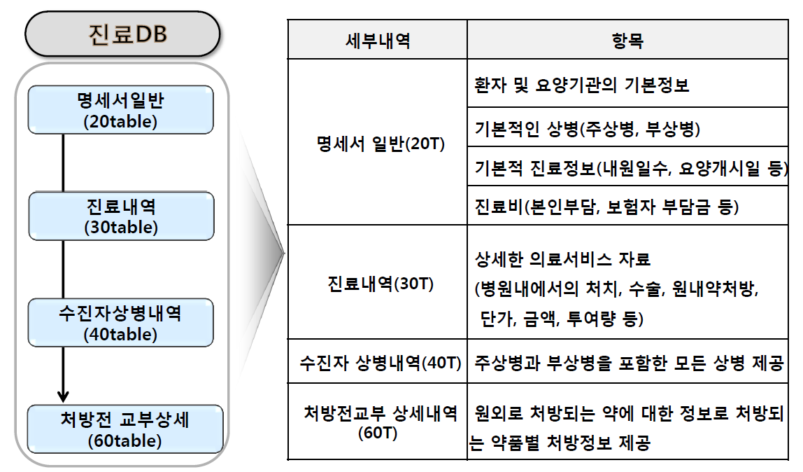

- 라이브러리 정의
libname bb 'D:\SAS\data';2.3.1 자격 DB – 자격 및 보험료테이블
PROC IMPORT OUT= bb.jk
DATAFILE= "D:\SAS\NSC2_BNC_1000.xlsx"
DBMS=EXCEL REPLACE;
RANGE="NSC2_BNC_1000$";
GETNAMES=YES;
MIXED=NO;
SCANTEXT=YES;
USEDATE=YES;
SCANTIME=YES;
RUN;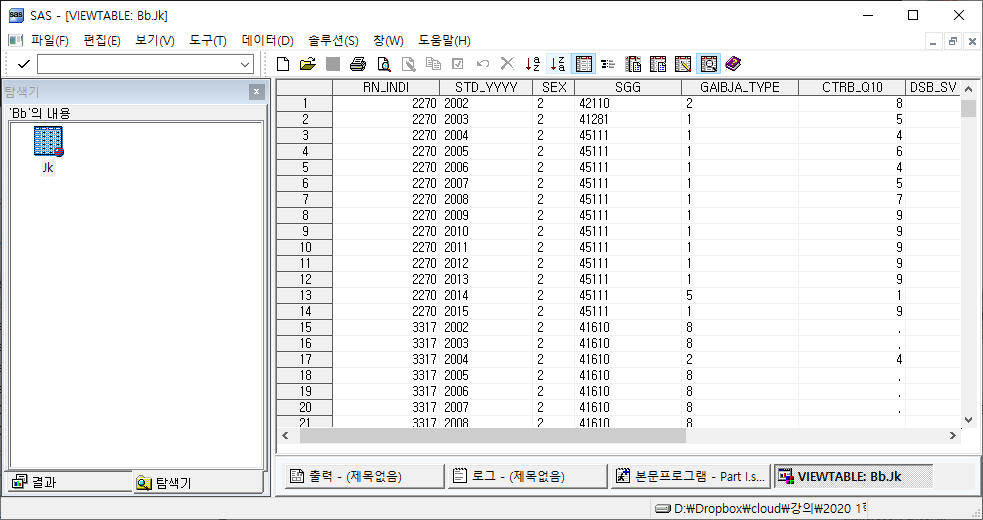
- 자격 DB - 자격 및 보험료테이블 변수 설명
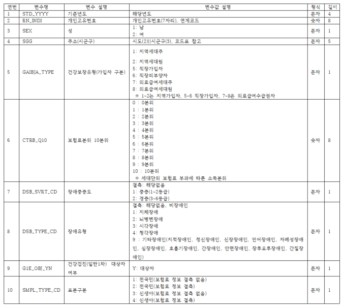
2.3.2 사망 DB – 출생 및 사망테이블
PROC IMPORT OUT= bb.death
DATAFILE= "D:\SAS\NSC2_BND_1000.xlsx"
DBMS=EXCEL REPLACE;
RANGE="NSC2_BND_1000$";
GETNAMES=YES;
MIXED=NO;
SCANTEXT=YES;
USEDATE=YES;
SCANTIME=YES;
RUN;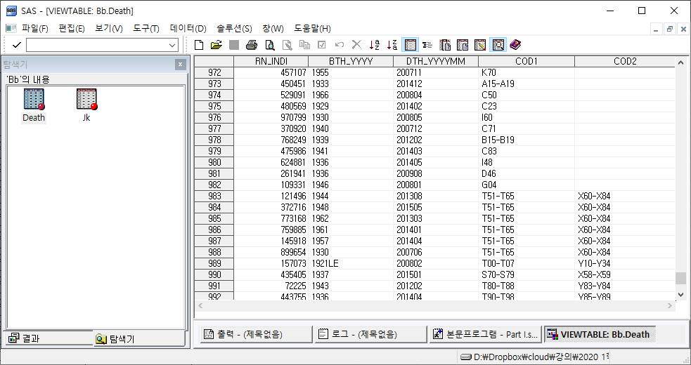
- 사망 DB - 출생 및 사망테이블 변수 설명
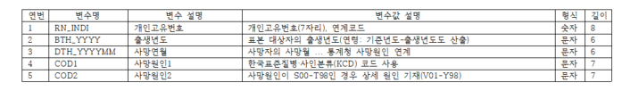
2.3.3 Table 20 - 진료 DB 명세서
PROC IMPORT OUT= bb.t20
DATAFILE= "D:\SAS\NSC2_M20_1000.xlsx"
DBMS=EXCEL REPLACE;
RANGE="NSC2_M20_1000$";
GETNAMES=YES;
MIXED=NO;
SCANTEXT=YES;
USEDATE=YES;
SCANTIME=YES;
RUN;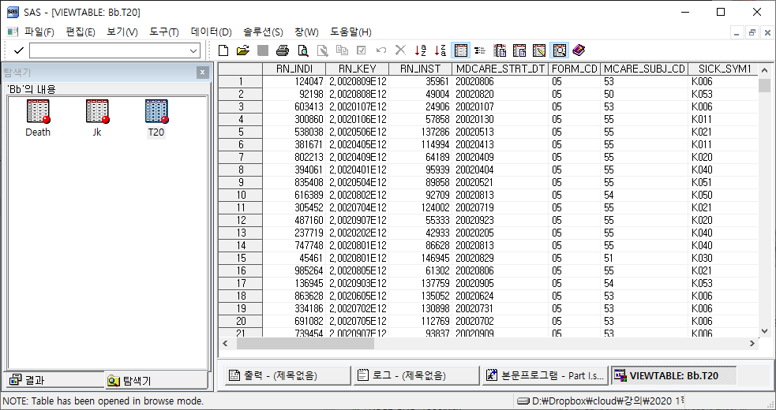
- Table 20 – 진료 DB 명세서 변수 설명
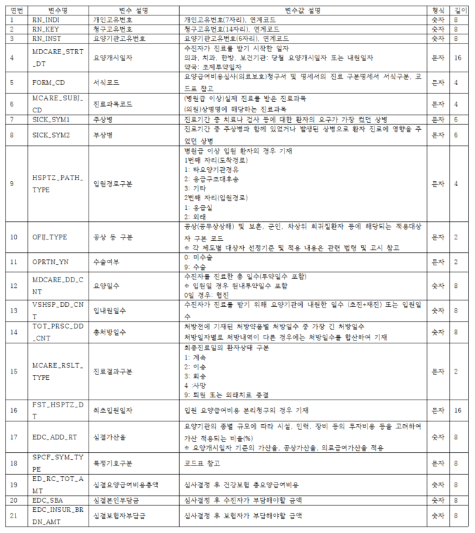
2.3.4 Table 30 – 진료 DB 진료내역
PROC IMPORT OUT= bb.t30
DATAFILE= "D:\SAS\NSC2_M30_1000.xlsx"
DBMS=EXCEL REPLACE;
RANGE="NSC2_M30_1000$";
GETNAMES=YES;
MIXED=NO;
SCANTEXT=YES;
USEDATE=YES;
SCANTIME=YES;
RUN;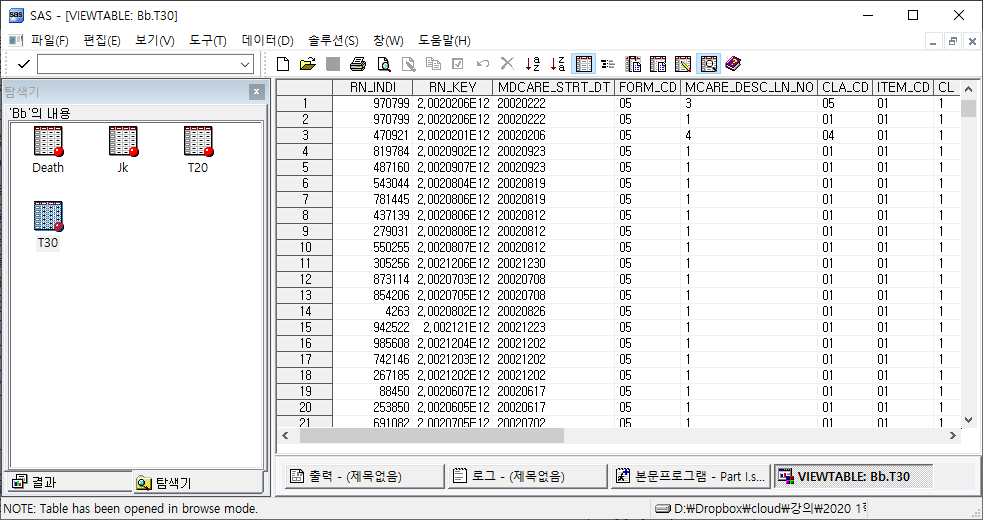 * Table 30 – 진료 DB 진료내역 변수 설명
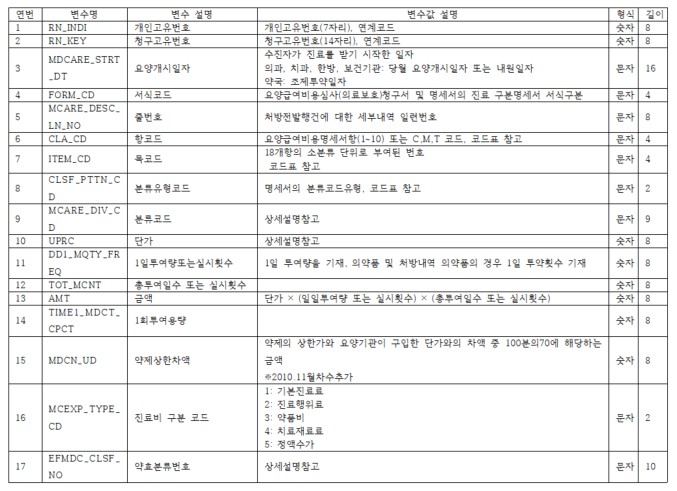
2.3.5 Table 40 – 진료 DB 상병내역
PROC IMPORT OUT= bb.t40
DATAFILE= "D:\SAS\NSC2_M40_1000.xlsx"
DBMS=EXCEL REPLACE;
RANGE="NSC2_M40_1000$";
GETNAMES=YES;
MIXED=NO;
SCANTEXT=YES;
USEDATE=YES;
SCANTIME=YES;
RUN;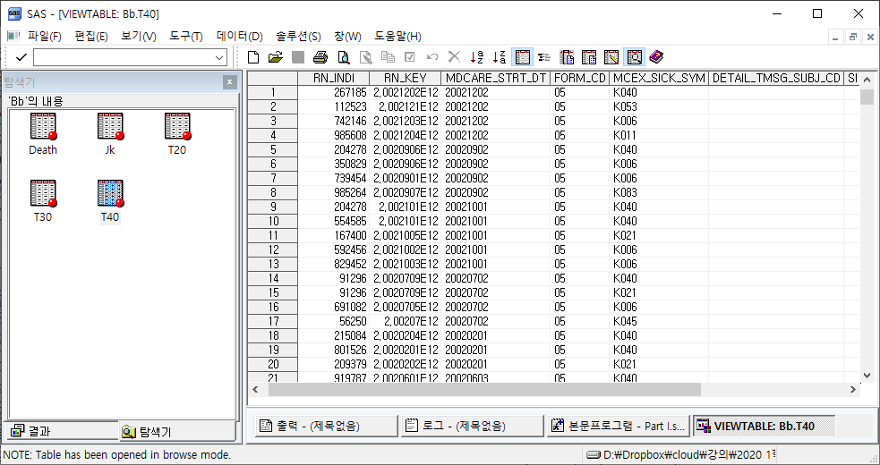
- Table 40 – 진료 DB 상병내역 변수 설명
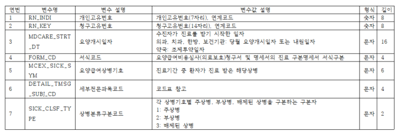
2.3.6 Table 60 – 진료 DB 처방전교부 상세내역
PROC IMPORT OUT= bb.t60
DATAFILE= "D:\SAS\NSC2_M60_1000.xlsx"
DBMS=EXCEL REPLACE;
RANGE="NSC2_M60_1000$";
GETNAMES=YES;
MIXED=NO;
SCANTEXT=YES;
USEDATE=YES;
SCANTIME=YES;
RUN;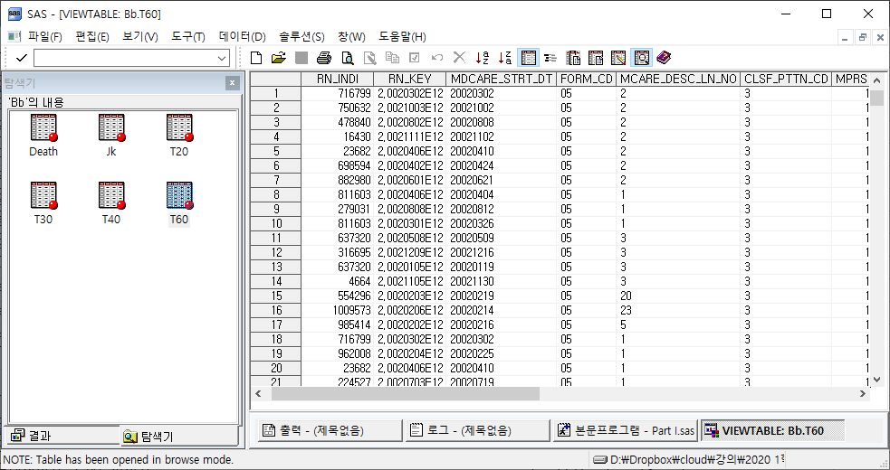
- Table 60 – 진료 DB 처방전교부 상세내역 변수 설명
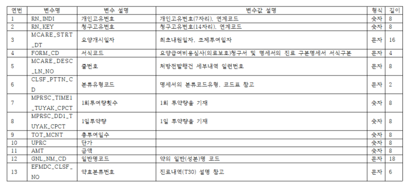